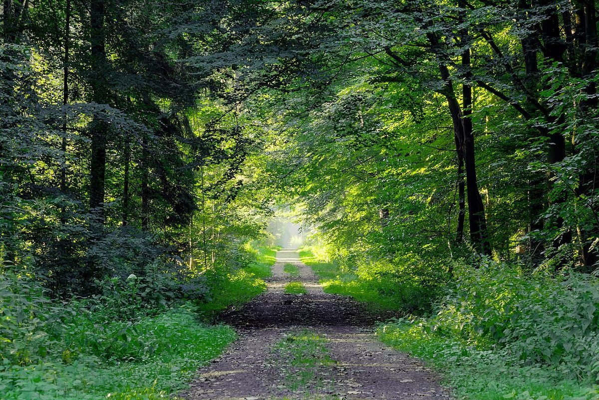

店のこと
店のこと
お店について確認できているのは、所在地と電話番号、Instagramのアカウントだけです。
このページの「想像してみる」部分は、制作側が想像して書いたものです。お店の実際の様子・考え・メニューとは関係がありません。
確認できていること
- 店名は「FOREST BEAR」、業種はカフェ
- 所在地は茨城県結城市上成130-3(〒307-0045)
- 電話番号は0296-47-6009
- Instagramは @forest_bear9090
- 営業時間・定休日・メニュー・価格・ご予約・駐車場は準備中

想像してみる
「森」と「熊」という二つの語から
由来は分かりません。制作側は、森(FOREST)と熊(BEAR)という二つの語から、木々の緑と、ふかふかした手ざわりのぬいぐるみを思い浮かべました。このサイトの緑色の背景と、糸で縫ったような点線の枠は、そこから生まれた制作側の飾りです(実際のお店の姿ではありません)。


